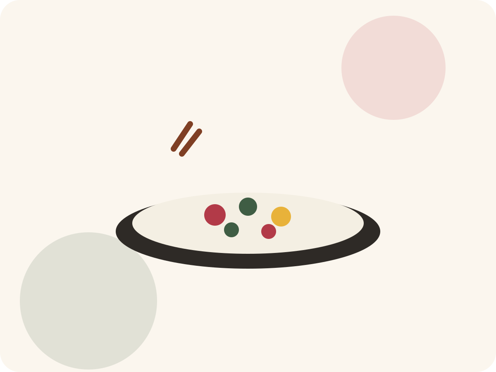

Palvelut
Japanilaisen ruoan kurssit ja palvelut.
Tutustu kursseihin, joilla opetetaan japanilaista ruokaa pienryhmissä ja yksityistilaisuuksissa.

Palvelut
Tutustu kursseihin, joilla opetetaan japanilaista ruokaa pienryhmissä ja yksityistilaisuuksissa.
